Class-AB Audio Amplifier (4 Ω, 10 W)
Designed a three-stage audio amplifier to drive a 4 Ω, 10 W speaker from a small ±100 mV input. The architecture uses two common-emitter preamplifier stages for voltage gain and a Class-AB output stage for current drive and efficiency.
Project Overview
Target was to reach ~10 V output swing and several amps of peak current into 4 Ω. The design splits into a low-noise front end (voltage amplification) and a robust push-pull output (current amplification) with thermal-friendly biasing.
Block Diagram
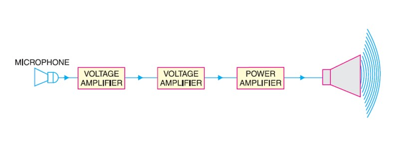
Stage 1 — CE Preamplifier
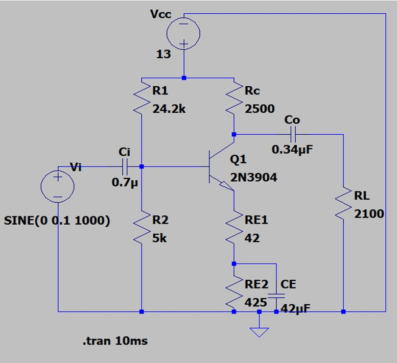
- Input: ±100 mV
- Measured gain: ≈22
- Output: ≈2.2 V
- Notes: Designed for higher gain initially, then tuned for stability and headroom.
Stage 2 — CE Preamplifier
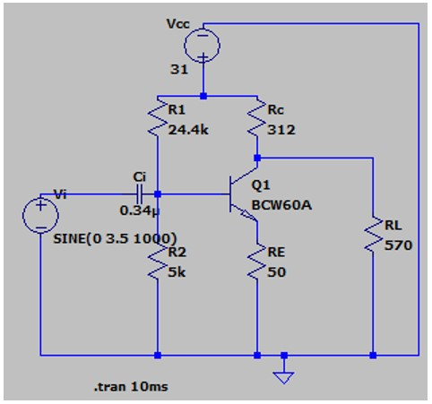
- Input: ≈2.2 V
- Gain: ≈4.2
- Output: ≈9.4 V
- Total front-end gain: ≈92×
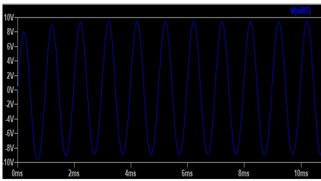
Output Stage — Class-AB Push-Pull
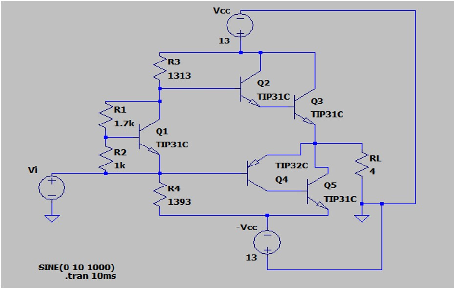
- Topology: Complementary Class-AB with bias network.
- Devices: 3× TIP31C (NPN) + 1× TIP32C (PNP).
- Supply: Raised from ~11 V to ~13 V to improve drive and symmetry.
- Current gain: ~15 mA → ~2.5 A peak capability.
Full Schematic
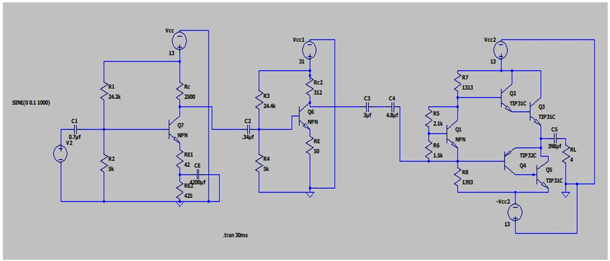
Simulation & Results
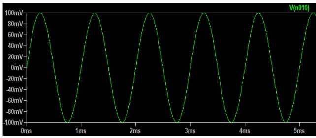
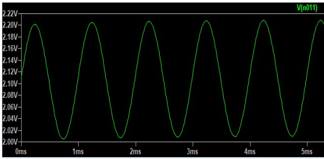
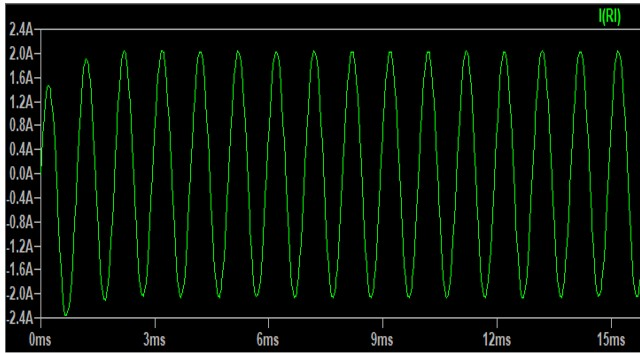
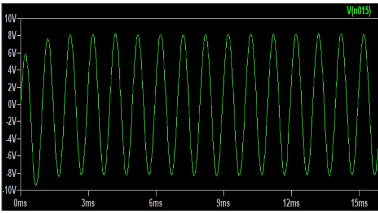
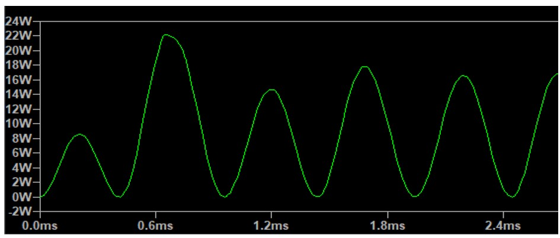
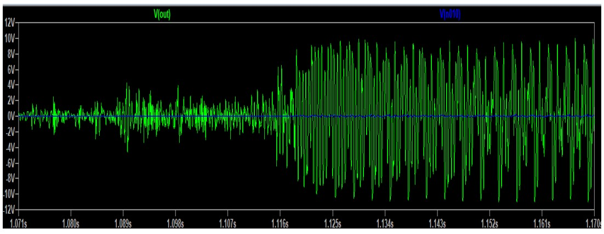
Design Notes
- Biasing & Thermal: Class-AB bias set to minimize crossover distortion while limiting idle dissipation.
- Headroom: Front-end gain chosen to avoid clipping under typical supply and load variations.
- Device Matching: Discrete complementary pairs can introduce mismatch that impacts efficiency.
Performance Summary
| Metric | Result |
|---|---|
| Input Sensitivity | ±100 mV |
| Voltage Gain (front-end) | ≈92× (22× · 4.2×) |
| Output Voltage | ≈9–10 V (into load) |
| Load | 4 Ω speaker |
| Peak Load Current | ≈2.5 A |
| Measured Efficiency | ≈61% (design) |
Components
- Power transistors: TIP31C (×3), TIP32C (×1)
- Small-signal transistors: ideal BJTs (simulation)
- Passive networks for biasing, AC coupling, and stabilization
Conclusion
The three-stage topology achieves the required voltage gain and current drive for a 4 Ω, 10 W speaker from a ±100 mV input. Using a Class-AB push-pull output with Darlington assistance provides strong current delivery with manageable distortion and heat.